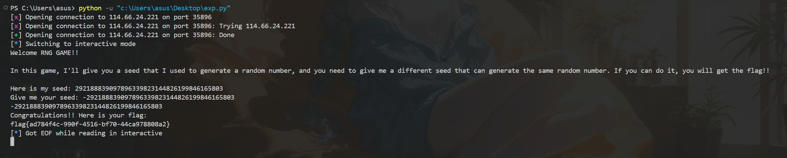
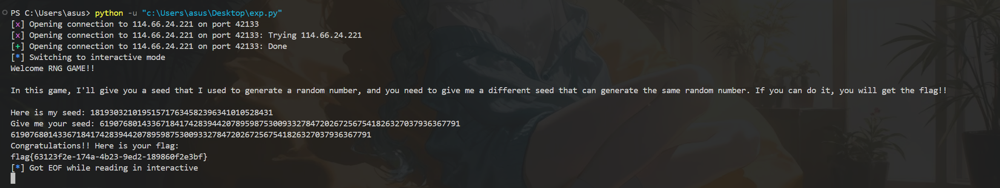

居然还能有我能ak的比赛哈哈
nctf_wp
Ez_RSA
题目
from Crypto.Util.number import * |
分析
题目在干什么
一个标准rsa，但给出一个hint
(_q为q转二进制的逆序)
突破口：
肯定从hint入手：
再联系另一个pq相关:
有这两个条件便可以一位位爆破01再按条件剪枝，恢复p，q，
也就是DFS分支界限法
DFS 剪枝策略
这里剪枝逻辑还是比较复杂的，这里借鉴了一下糖醋小鸡块的exp
- 高位剪枝：当恢复的高位乘积已经大于 n 时，剪枝
- 低位剪枝：当恢复的低位乘积与 n 的低位不匹配时，剪枝
- 中间剪枝：利用异或关系限制 p 和 q 位的可能性
原文：糖醋小鸡块的exp
exp
from Crypto.Util.number import * |
Hard_RSA
题目
from Crypto.Util.number import getPrime, bytes_to_long |
分析
在本题中：
接下来分析一下各个变量的数据：
- 分别是 512 bits， 是 1024 bits。
- 的大小为 bits。
- ，因此 是一个非常庞大的数字(6144 bits)
- 非常大，同时也就决定的e也会非常大
可以从大小看出来此题可能要用winner攻击
将上面的等式除以 ，可以进行变形：$$\frac{e}{\phi} - \frac{k}{d} = \frac{1}{d \cdot \phi}$$
用 来近似替代
使用连分数展开，其中某个收敛分数可能就是
exp
from Crypto.Util.number import long_to_bytes |
RNG GAME
题目
[x] Opening connection to 114.66.24.221 on port 35896 |
分析
容器用的是 Python 的 random.seed(int)，CPython 底层会先把整数种子取绝对值，再初始化 RNG，所以 S 和 -S 会得到完全相同的随机状。
所以实际做法很简单：
连上给seed加一个负号发回去就行了
exp
无

RNG GAME revenge
题目
[x] Opening connection to 114.66.24.221 on port 42133 |
分析
发负号不给过，大概率要老老实实找seed了~
mt安全性分析
-
当我们调用 random.seed(x) 并且 x 是一个超大整数时，Python 底层会先把它切片。Python 会把它按 32 位为一块，切成一个 C 数组。原 Seed(128位)切分后，就变成了一个长度 的数组。
-
接下来，Python 会把这个数组 混淆进 MT19937 的状态矩阵（长度为 624 的数组）里。在 CPython 的 _randommodule.c 的 init_by_array 函数中，有这么一个关键的循环：
// i 是状态矩阵的索引，j 是种子数组的索引 |
核心构造
由0到3就会清零，长度为4，所以我们可构造 ，长度为8(这里12，16都可以，与8同理)。
前4个元素：
与原k相同
后四个元素：
由此得到
再把这个长度为 8 的新数组重组为新 Seed，把这个数组重新拼装成一个超大正整数即为所求。
exp
words = [] |
把结果发回去就能出flag

yqs
既然叫让ai打那就让ai打吧哈哈
题目
from util import * |
分析
先看 m 分支。虽然代码里取了 sha512(msg) 的低 128 bit，但 util.py 里的 encrypt() 又把消息截成了低 8 bit：
def encrypt(self, m): |
所以我们只需要找一个整数 msg 满足：
sha512(str(msg)) & 0xff == 0 |
就能让一整轮 100 次 m 查询都变成
b = <a, s> + e mod q, e in {0,1,2,3} |
也就是低噪声 LWE 样本。实际可用的一个值是 155。
每轮拿到 100 组样本后，把 a_int 按 q 进制拆成 77 维向量，记成：
b = A s + e mod q |
其中 A 是 100 x 77 矩阵。取一个可逆的 77 x 77 子矩阵 A1，剩余部分记为 A2，构造
A' = A2 * A1^-1 mod q |
再构造 q-ary lattice：
B = [ I 0 ] |
对目标向量 (b1, b2) 做 Babai 最近平面，就能恢复 A1 * s，进而得到整轮的 s，最后按题目自己的编码方式导出：
priv = sum(s_i * q^i) |
然后看 e 分支。这里的椭圆曲线实现有两个关键问题：
ECC.add()根本不检查输入点是否在曲线上。- 加法公式只用到了
a=486662和p，完全没有用到b。
这意味着它实际上接受任意满足
y^2 = x^3 + 486662x + c |
的点参与运算。甚至题目给的基点 G 本身都不在 b=1 这条曲线上，而是在
y^2 = x^3 + 486662x + 35039673 |
上。
e 分支会先把输入坐标和本轮 priv 异或，再做标量乘：
priv = lwe.export_priv_key() |
由于我们已经通过 m 分支恢复了本轮 priv，所以可以反向构造输入，让异或后的点在模 p 意义下等于我们指定的目标点 T=(X,Y)。做法是把 priv 拆成：
low = priv mod 2^256 |
由于 high 的低 256 位全为 0，只要令
X' = (X - high) mod p |
那么服务端异或后得到的坐标就与 (X,Y) 模 p 同余，最终群运算效果等价于把目标点 T 送进 ecc.mul()。
接下来离线在若干条
y^2 = x^3 + 486662x + c |
上找平滑小阶点。每轮送一个小阶点进去，得到：
R = [master_sec]T |
再在对应小阶子群里做离散对数，拿到 master_sec mod r。多轮结果用 CRT 合并，只要模数总位数超过 master_sec 的 240 bit，就能唯一恢复 master_sec。
最后按题目给的方式：
aes_key = sha256(str(master_sec).encode()).digest() |
直接解 AES-ECB 即可拿到 flag。
样例实例最终恢复出的 flag 为：
flag{2fda0938-0e4e-47fe-a93c-e3acdd7f3991} |
exp
import ast |
Encryption
笔者不会打pwn题，照着ai的思路写一写吧
题目
附件： |
分析
程序流程很直接：
- 初始化
libcipher.so的加密上下文ctx gets读取用户输入到栈上缓冲区strlen检查输入长度是否超过 64- 加密用户输入并输出
- 读取
/flag，加密后输出Flag Ciphertext
原来的 ret2win 链会跳到 0x401436，执行：
system("su ctf -s /bin/sh"); |
这只能拿到 ctf 用户 shell，而远端 /flag 是 600 root:root，所以这条链不是正解。
真正的点在于：
gets没有限制长度- 长度检查在
gets之后 - 用户输入缓冲区后面紧跟着就是加密上下文
ctx
也就是说，输入不仅能覆盖返回地址，也能先覆盖 ctx。
关键栈布局：
- 输入缓冲区：
rbp-0x3e0 ctx：rbp-0x3a0- RIP 偏移：
0x3e8
由于 gets 支持写入 \x00，我们可以：
- 前 64 字节放正常可见字符
- 后面继续跟大量
\x00
这样 strlen(buf) 只会看到前面的可见内容，长度检查通过，但后面的 ctx 已经被改坏了。
逆完 libcipher.so 后可以发现：
ctx[0x000:0x150]是轮密钥区ctx[0x150:0x250]是替换表ctx[0x250:0x350]是逆替换表ctx[0x350] = 0x14，即 20 轮
最关键的是，这题的替换表其实是恒等映射，不是真正的 AES S-box：
for (i = 0; i <= 0xff; i++) { |
所以只要把前 0x150 字节轮密钥区清零，加密就退化成一个固定的线性变换。
最终利用方式：
- 发送 64 字节已知明文
- 再发送
0x150个\x00清空轮密钥 - 程序会输出：
- 我们已知明文的密文
- flag 的密文
因为这时加密器已经没有未知密钥，本地把这个线性变换逆掉即可恢复 flag。
我这里选的已知明文是：
b"0123456789ABCDEFGHIJKLMNOPQRSTUVWXYZabcdefghijklmnopqrstuvwxyz+/" |
脚本会先用这段已知明文做自校验，确认逆过程正确，再去解 Flag Ciphertext。
最终拿到的 flag 为：
flag{327d6902-abe7-4c55-ae45-5c382d128ae9} |
exp
from pwn import * |